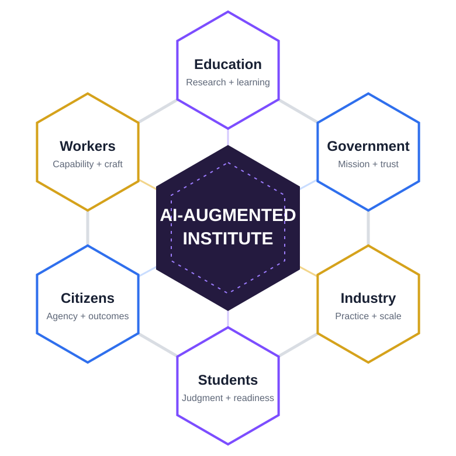

Research + learning
Research rigor, faculty expertise, curriculum, learning environments, and educational experimentation.
Explore education partnership →AI is becoming a persistent participant in how people learn, work, research, create, decide, operate, and lead. The AI-Augmented Institute brings education, government, industry, researchers, and practitioners together to learn how we deliberately combine human and artificial intelligence—extending capability while preserving judgment, expertise, accountability, and agency.

The challenge
Organizations everywhere are deploying AI. The harder questions come next: How should humans and AI divide work? How do we preserve expertise as automation increases? How do teams verify AI-generated work? What makes an AI-augmented workflow effective? How should students prepare for work that is changing underneath them? How should institutions measure whether AI is actually increasing capability?
These questions are larger than any technology platform—and larger than any single institution.
The Institute
The AI-Augmented Institute is a shared environment where ideas can be researched, tested in real settings, measured, refined, taught, and shared.
Its focus is the human + AI system: people, skills, curriculum, practices, workflows, evidence, governance, education, organizational capability, and outcomes—not a particular model, vendor, or platform.
The goal is not simply better AI adoption. It is a repeatable body of knowledge for responsible, effective augmentation.
One ecosystem. Six perspectives.
Research rigor, faculty expertise, curriculum, learning environments, and educational experimentation.
Explore education partnership →Public purpose, accountability, complex missions, workforce transformation, policy questions, and societal outcomes.
Explore government partnership →Technology, operating experience, real workflows, rapidly evolving practice, evidence, and scale.
Explore industry partnership →Developing the knowledge, habits, and human judgment needed to learn and work effectively with AI.
Ensuring AI-enabled institutions improve services and outcomes while preserving transparency, agency, and trust.
Extending expertise, redesigning work, and building repeatable practices that improve quality and capability.
Continuous learning loop
The Institute closes the gap between theory and practice. Ideas are researched, applied in real environments, measured, refined, taught, and shared. Each cycle expands an evidence base no single institution could create independently.
Shared infrastructure
Participation produces more than isolated projects. Research, curriculum, pilots, assessments, cases, and lessons learned contribute to a growing shared body of knowledge for effective human + AI work.
Questions, studies, methods, findings, and cross-institution evidence.
Courses, modules, teaching guides, certificates, exercises, train-the-trainer resources, and learning pathways.
Repeatable approaches supported by evidence from real environments.
Documented successes, failures, conditions, constraints, and lessons learned.
Ways to assess capability, quality, trust, productivity, risk, and organizational value.
Reusable human + AI workflow, team, governance, and organizational patterns.
A shared language for augmentation, evidence, responsibility, capability, and judgment.
Practical instruments that turn the research base into action for people, teams, and institutions.
Curriculum is core infrastructure
Curriculum is not an afterthought or a static download library. It is one of the primary ways the Institute converts emerging evidence into reusable human capability.
The curriculum loop
Research identifies what matters. Practice shows what works. Evidence establishes what is durable. Curriculum turns that evidence into teachable methods. Education creates capable people and teams. Adoption produces new evidence—and the cycle begins again.
Partners can both access curriculum and contribute to it. Universities can develop and validate learning models. Government and industry can contribute real cases, workflow patterns, and capability requirements. The Institute turns that shared work into reusable learning assets.
Participation model
Curriculum, frameworks, cases, assessments, methods, research, and shared resources.
Investigate important questions through cross-sector and multi-institution collaboration.
Bring research, curriculum, pilots, tools, expertise, evidence, and data where appropriate.
Publish findings, cases, validated practices, measures, patterns, and lessons others can use.
Continuously strengthen the Body of Knowledge and the discipline itself.
Initial research agenda
Decision-making, task division, escalation, review, and effective partnership.
Skills, curriculum, professional development, and workforce readiness.
Grounding, evidence, governance, accountability, and responsible use.
Capability, quality, value, productivity, risk, and outcomes.
Operating models, decision rights, management, and AI-augmented leadership.
Skill preservation, human judgment, meaningful control, and responsible delegation.
Business, education, legal, medical, public-sector, and other domain-specific patterns.
Localization, language, culture, comparative cases, and context-sensitive adoption.
A common capability lens
The Institute connects research, curriculum, assessment, and practice across individuals, teams, and organizations.
| Individual | Team | Organization | |
|---|---|---|---|
| LEARN | Understand AI and develop judgment. | Build shared language, norms, and literacy. | Develop institutional understanding and readiness. |
| APPLY | Use repeatable practices on real work. | Integrate AI into workflows and collaboration. | Establish governance, patterns, and operating practices. |
| AUGMENT | Extend individual capability. | Redesign how teams create and decide. | Transform organizational capability and operating models. |
Choose your path
Build and validate curriculum, study human + AI learning and work, run institutional pilots, develop faculty and students, and contribute to a cross-institution evidence base.
Explore education partnership →Develop workforce curriculum, test practices in mission environments, strengthen verification and governance, and turn public-sector learning into reusable methods.
Explore government partnership →Contribute real workflows, skills needs, cases, pilots, and evidence—and help turn fast-moving experience into durable curriculum and validated practice.
Explore industry partnership →Start small. Produce something useful.
The first engagement does not need to be a broad membership commitment. Start with one meaningful question, educational need, operational challenge, or community to convene.
Hold a 60–90 minute executive conversation around priorities, current AI work, and mutual interests.
Choose one research question, curriculum need, operational challenge, or convening opportunity.
Agree on participants, contributions, outputs, evidence to capture, and success measures.
Execute a focused research, curriculum, practice, regional, or convening initiative.
Capture learning, determine what can be shared, and decide whether to expand the relationship.
Founding collaboration
We are inviting an initial group of education, government, and industry organizations, researchers, and practitioners to help shape the Institute—not simply join a program that has already been defined.
Early collaborators can help influence the research agenda, shared terminology, curriculum, educational models, pilots, measurement approaches, publications, and the structure of the consortium itself.
The first step is a conversation, not a commitment.